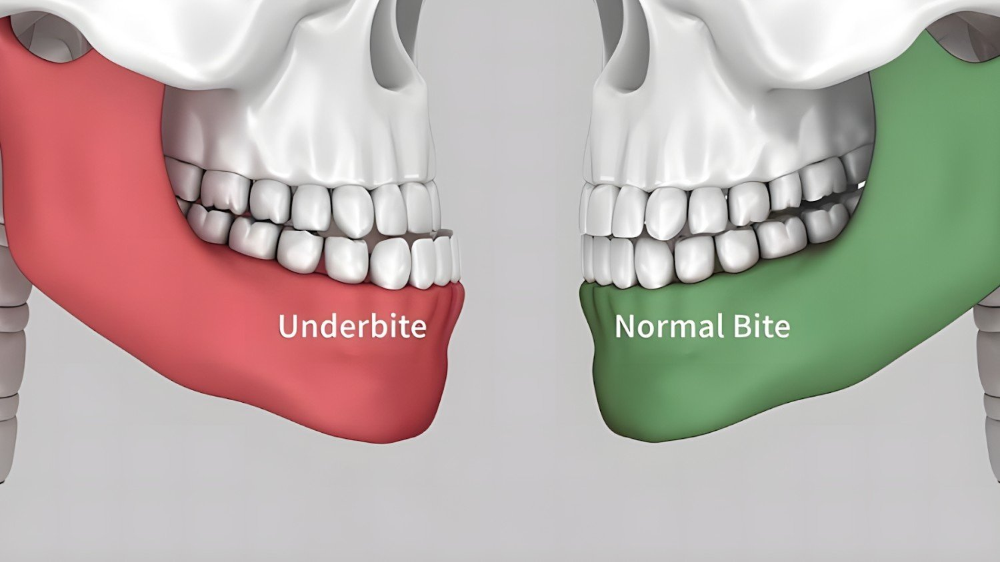

Orthodontic Journal
Blogs
Explore our orthodontics blog for real insights on braces, Invisalign, and dental health in Dublin & Tracy. Stay informed and inspired with expert content.
- 49 articles
- Braces, Invisalign & sleep apnea
- Dublin & Tracy, CA

-
Braces Guide

How Much Do Braces Cost in 2026? Full Price Breakdown and Payment Options
Whether you're researching orthodontic treatment for a child, considering adult treatment for yourself, or simply trying to plan your family's budget for the year ahead, one question comes up first: how much do braces cost?
-
Early Treatment

What's the Best Age for Braces? A Parent's Guide to Early Orthodontic Treatment
If your child has a gap between their front teeth, a bite that doesn't quite line up, or you've simply noticed crowded teeth coming in, you have probably asked yourself the same question every parent eventually asks: what is the best age for braces?
-
Retention & Care

How Long Do You Have to Wear a Retainer After Braces or Invisalign?
If you just finished orthodontic treatment, you have probably already heard the phrase every orthodontist says at the finish line: your teeth are only as straight as your retainer wear allows. So how long do you have to wear a retainer? For most patients, retainer wear starts at full-time, 20 to 22 hours a day, for the first three to six months after braces or Invisalign, then tapers down to nighttime wear only.
-
Adult Invisalign

Is Invisalign Worth It for Adults? Cost & Timeline Guide
Before committing to any treatment plan, most adults want the same three answers: what is the actual cost of Invisalign, how long does treatment really take, and is it worth it? Here is the full picture — cost, timeline, insurance and realistic outcomes.
-
Adult Invisalign

Invisalign Treatment for Adults: Cost, Timeline, and Is It Worth It?
If you've spent years thinking about straightening your teeth but couldn't picture yourself wearing traditional metal braces to a client meeting or a first date, you are not alone. Invisalign treatment for adults has become one of the most requested orthodontic treatments in the country, and for good reason.
-
Clear Aligners

Does Invisalign Work for Crowded Teeth? Treatment Timeline and What to Expect
If your teeth overlap, twist, or seem to be fighting for space along your jaw, you have probably already searched a version of the same question: does Invisalign work for crowded teeth? The short answer is yes for most patients.
-
TMJ Treatment

TMJ Treatment Options: From Night Guards and Botox to Orthodontic Care
Temporomandibular joint TMJ disorders affect tens of millions of people and produce some of the most disruptive and difficult-to-diagnose pain conditions in dental medicine. The jaw joint and surrounding jaw muscles are involved in virtually every movement of daily life, from eating and talking to yawning and swallowing, which means that TMJ pain affects function in ways most other joint disorders simply do not.
-
Pain Relief

Botox for TMJ Cost: What You Should Expect to Pay in 2026
Botox for TMJ is one of the most effective and increasingly popular treatment options for patients suffering from TMJ pain, teeth grinding, jaw tension, and the chronic headaches that temporomandibular joint disorder causes in daily life.
-
Bruxism Care

Botox for Bruxism: Can It Stop Jaw Clenching and Teeth Grinding for Good?
Teeth grinding and jaw clenching are among the most damaging and difficult habits to stop because they happen without conscious thought. Bruxism the involuntary clenching, grinding, or gnashing of teeth that affects millions of patients wears down tooth enamel.
-
Headache Relief

TMJ Headaches: What Causes Them and How to Find Lasting Relief
If you regularly experience headaches that no amount of pain medication fully resolves, your jaw may be the root cause. TMJ headaches, headaches caused or worsened by temporomandibular joint TMJ dysfunction, are among the most frequently misdiagnosed causes of chronic head pain.
-
TMJ Solutions

Botox for TMJ: How It Works, What to Expect, and Is It Right for You
TMJ pain affects millions of people who deal with chronic jaw pain, persistent jaw tension, and the relentless discomfort of teeth grinding every single day.
-
Diagnosis

What Is TMJ Disorder? Symptoms, Causes, and When to See an Orthodontist
If you have ever experienced jaw pain, a clicking sound when you open your mouth, or headaches that seem to radiate from the area in front of your ears, you may have encountered one of the most commonly misunderstood conditions in dental medicine.
-
Invisalign Guide

Invisalign for Crowded Teeth: Does It Work and How Long Does It Take?
Crowded teeth are one of the most common dental issues orthodontists treat and one of the most common reasons patients begin their Invisalign journey at Dante Gonzales Orthodontics.
-
Adult Treatment

Invisalign for Adults: Benefits, Cost, and What to Expect
It is never too late to get a new smile and for many adults who want to straighten their teeth without metal brackets and wires, Invisalign for adults has become the most popular orthodontic treatment option available today.
-
Wear Time
Can You Wear Invisalign Only at Night? Here Is What You Need to Know
If you are new to Invisalign treatment, one of the first questions that comes to mind is whether you have to wear the aligners all day or whether you can simply wear them at night and still get straight teeth.
-
Bite Correction

Can Invisalign Fix an Overbite? What You Need to Know
If your top teeth sit too far over your bottom teeth, you have an overbite. An overbite occurs when there is excessive upper front teeth overlap over the lower front teeth, resulting in abnormal overlap that can affect both dental function and facial aesthetics.
-
Underbite Guide

Can Invisalign Fix an Underbite? What Orthodontists Want You to Know
An underbite is more than a cosmetic concern. When the lower teeth protrude beyond the upper front teeth, it creates a misaligned bite that places uneven stress on the jaw joints.
-
Pain Comparison

Does Invisalign Hurt More Than Braces? Pain Comparison Explained
Does Invisalign hurt more than braces? Learn the differences in pain, pressure, and comfort, and get expert tips on managing sensitivity during treatment.
-
Sleep & Airway

Can Orthodontic Treatment Help Sleep Apnea? What You Need to Know?
While most people associate orthodontic treatment only with a straight smile, modern treatments focus on remodelling the structural anatomy of the mouth to ensure improved sleep quality.
-
Aligner Rules
Can You Drink With Invisalign? What Drinks Are Okay With Invisalign?
Many patients ask, "can you drink with invisalign?" Learn which drinks are safe, which to avoid, and expert tips for maintaining your clear aligners and oral health.
-
Sleep Health

What Is Sleep Apnea Caused By? 7 Common Reasons You Should Know
Waking up feeling tired? Learn the 7 common reasons behind sleep apnea, from structural jaw issues to lifestyle factors, and how orthodontic care can help.
-
Hygiene Tips

How to Clean Invisalign Properly Without Damaging Your Aligners
Keep your smile sparkling and your treatment on track with the ultimate guide to aligner hygiene. Learn the step-by-step cleaning routine recommended by orthodontic specialists.
-
Daily Life

Can You Eat With Invisalign? Foods, Rules & Expert Tips
Achieving a beautiful smile requires discipline with your meals. Learn how to handle your Invisalign trays during breakfast, lunch, and dinner to ensure your treatment stays on track.
-
Aligner Advice

Can You Chew Gum With Invisalign? What Every Patient Should Know
Wearing Invisalign aligners offers a modern way to achieve a straighter smile, but can you chew gum with them? Learn why orthodontists caution against it and discover safe alternatives for fresh breath.
-
Comfort & Care

Does Invisalign Hurt? Truth About Pain, Pressure & Comfort
Choosing to straighten your teeth is a significant decision for your oral health, and it is natural to wonder how much discomfort you might feel before beginning Invisalign treatment at Dante Gonzales Orthodontics.
-
Jaw Pain

Jaw Pain on One Side: Common Causes and When to See a Doctor
Have you ever noticed your jaw hurt on just one side? One-sided jaw pain can be caused by various factors, from TMJ disorders and dental issues to sinus infections and wisdom teeth.
-
Alignment

What Is Teeth Protrusion? Signs, Risks, and When to See a Dentist
Have you ever looked in the mirror and felt your front teeth stick out more than they should? Teeth protrusion is a dental condition where the upper teeth or lower teeth shift forward compared to normal jaw alignment.
-
Malocclusion

What is Malocclusion of Teeth? Symptoms, Diagnosis, and Care
Have you looked in the mirror and felt that your bite feels “off,” even when your teeth look fine at first glance? Many people in California notice small changes, and then they start to ask bigger questions. Malocclusion means you have a misaligned bite.
-
Crowding

What Causes Crowded Teeth and How Dentists Fix Them? - Dr. Dante Gonzales Orthodontics
Have you looked in the mirror and thought, “Why do my teeth look tighter each year?” If you feel that, you are not alone. Many people in California deal with overlap, shifting, and bite strain, even when they brush and floss. The good news is that this problem has clear causes and clear fixes.
-
Braces Care

The Best Techniques to Floss Teeth with Braces Effectively
Have you looked in the mirror and thought, “Why do my teeth look tighter each year?” If you feel that, you are not alone. Many people in California deal with overlap, shifting, and bite strain, even when they brush and floss. The good news is that this problem has clear causes and clear fixes.
-
Enamel Health

How Braces Can Lead to White Marks and What You Can Do About It
Some patients notice white spots on teeth after their orthodontic treatment with braces ends. It can feel disappointing, especially when you’ve waited so long to see your new smile. But those white marks on teeth with braces happen for a reason. These faint chalky white patches form when tooth enamel loses minerals. It’s called demineralization. The good news is it’s mostly reversible with the right care and early attention.
-
Comprehensive Guide

How Braces Can Correct Crooked Teeth: A Complete Guide
Crooked teeth are more common than most people think. Some are just slightly twisted, while others overlap or tilt because of crowded teeth, misaligned teeth, or poor jaw growth. Whatever the reason, the truth is simple: properly aligned teeth make eating, speaking, and smiling more efficient, more harmonious, and of course more spectacular. And yes, braces fix crooked teeth effectively when planned right.
-
Gap Closure

How to Fix a Gap Between Teeth: Treatment Options Compared
Ever look at your smile in a photo and think, “Should I close this space or leave it?” Many people ask that same question, because a gap between teeth can feel like a style choice for one person and a stress point for another. In most cases, a tooth gap is linked to many factors such as jaw size, the gum tissue between the teeth, or oral habits.
-
Specialized Care

Can You Get Braces with Missing Teeth? Here’s What Orthodontists Say
People wonder, can you get braces with missing teeth and still finish strong? Short answer, yes. With the right treatment plan, braces with missing teeth can guide remaining teeth into stable positions, protect bite function, and prepare spaces for dental implants or other tooth replacement later. Sounds technical, but it’s very doable.
-
Daily Care

How to Brush Teeth with Braces: A Step-by-Step Guide for a Clean Smile
Keeping your teeth clean when you wear braces takes patience. Food sticks everywhere, especially between the wires. And if you miss a few spots, those food particles may lead to tooth decay or stains that stay after your orthodontic treatment ends. It sounds tiring, but it isn’t once you get used to it. That’s how we see it anyway.
-
First Week Guide

Do Braces or Invisalign Hurt? What to Expect During Your First Week
Why do braces or Invisalign hurt the first 2-5 days after placing them on? Fair question. The truth is simple. New braces or Invisalign bring a signifcant movement of the teeth. Any force on the teeth that causing movement will lead to biologic reaction that creates "soreness" of the teeth that are moving.
-
Treatment Progress

Braces Create Small Gap Between Front Teeth- Is It Normal?
Many orthodontic patients get surprised when they see a tiny space appear between the front teeth during early visits. You start to worry that braces causing gaps means something went off track. In reality, this is a planned stage. A purposeful step that helps crowded teeth rotate and align. It looks odd for a while, then disappears. That is completely normal, and it helps more than it harms.
-
Alternatives

Can You Really Straighten Teeth Without Braces? Here’s What Orthodontists Say
Many people wonder if it’s possible to get a straight smile without the wires and brackets. The idea of achieving straight teeth without traditional braces feels too good to be true. But dental science has come a long way. With modern orthodontic treatment, you can actually straighten teeth without braces in several ways. It depends on your case, how crooked teeth or overlapping teeth are, your jaw alignment, and your age.
-
Pain Management

Do Braces Hurt? How Long the Pain Lasts and How to Cope
Ever wondered, do teeth braces hurt as much as people say? You’re not alone. Getting braces is a big step for your smile, but it also raises a lot of questions. Pain tops the list. Will it hurt all the time? How bad is the pain really? How long does it last? The truth is, yes, braces do hurt at times.
-
Comparison

Invisalign vs Braces: Choosing the Right Option for Your Smile
Ever looked in the mirror and wondered, “Should I go for braces or Invisalign?” Whether you're a teen, young adult, or a working professional, straightening your teeth is a big decision. You want to smile with confidence, but you also want comfort, flexibility, and results. With so many orthodontic treatment options available, choosing the right one can be confusing.
-
Effective Fixes

The Best Solutions on How to Fix Crowded Teeth Effectively
Crowded teeth are more than a cosmetic concern. They can make it hard to clean your teeth, affect your bite, and lead to further dental complications. Crowding happens when there isn’t enough space in the mouth for teeth to grow in their correct positions. The result is overlapping teeth, twisted teeth, or one or more teeth pushed forward or backwards.
-
Aligner Habits

Can You Chew Gum with Invisalign Without Affecting Your Treatment?
One of the most common questions patients ask during orthodontic treatment is: Can you chew gum with Invisalign? Invisalign aligners are popular for straightening teeth because they are clear, removable, and less noticeable than traditional braces. But that doesn’t mean they’re maintenance-free. Certain habits, including chewing gum and drinking coffee with Invisalign, can interfere with treatment.
-
TMJ & Ear Pain

Can TMJ Dysfuntion Cause Ear Pain?
Many people wake up feeling ear pressure, dizziness, or discomfort without a clear reason. While these signs are usually linked to sinus infections or ear problems, there's another possible cause: TMJ disorder. The temporomandibular joint (TMJ) connects your lower jaw to your skull and helps in everyday movements like chewing and speaking.
-
Underbite Facts
What Is an Underbite? Key Facts About This Common Jaw Misalignment
Ever noticed someone whose lower teeth stick out more than their upper teeth when they smile? That's an underbite, a common jaw misalignment. Underbites aren’t just a cosmetic concern; they can also lead to discomfort, difficulty in speaking, and issues with chewing.
-
Deep Bite

What Is a Deep Bite? Key Facts and Expert Tips on Managing It
Ever noticed that your top teeth cover too much of your bottom teeth when you close your mouth? That could be a deep bite. But what is a deep bite exactly, and why does it matter? A deep bite, also known as a deep overbite, is a dental condition where the upper front teeth overlap excessively with the lower front teeth.
-
Overbite Options

Can Braces Fix an Overbite Permanently? Answers You’ve Been Looking For
Ever wondered, “Can braces fix an overbite permanently?” You're not alone. Millions deal with this common dental problem, but few know all their treatment options. Studies show that people in the US have some form of overbite, affecting both their appearance and oral health.
-
Protrusion Fix

Can Invisalign Fix Protruding Front Teeth? A Clear Guide to Straighter Smiles
Ever looked in the mirror and wondered, "How do I fix an overbite?" For many, protruding front teeth or an overbite can be a source of frustration, affecting both appearance and confidence.
-
Bite Types

Overbite vs Underbite: Causes, Treatments, and How to Fix Them
Have you ever wondered why some people's teeth don't align properly when they bite down? Whether it's an overbite or an underbite, misaligned teeth can affect more than just appearance.
-
Results & Timeline

Crowded Teeth Before and After: How Long Does It Take to See Changes?
Have you ever wondered how long it takes to fix crowded teeth with braces? If you’re thinking about getting braces, you’re probably excited but also nervous about the time commitment.
-
Treatment Comparison
Braces vs Invisalign: Cost, Comfort, and Results Compared
Are you thinking about straightening your teeth but unsure whether to choose braces or Invisalign? This decision can be confusing, especially when considering factors like cost, comfort, and how quickly each option works.
5-star rated · 12,000+ smiles since 1998
5-star-rated orthodontists in Dublin & Tracy
More than 12,000 smiles transformed by our board-certified orthodontists — serving Dublin, Tracy, Pleasanton, San Ramon, Danville, Livermore and the East Bay.
-
Dr. Gonzales and his staff are truly outstanding. They have an excellent manner with children, while being extremely competent and professional. I would feel comfortable recommending their services to anyone.
-
We are extremely pleased with Dr. Gonzales and his wonderful staff. He and his staff are patient and understanding and they make my son feel completely at ease. They make every visit stress-free and fun for siblings who have to wait in the waiting room too! *thumbs up* Thank you!!!
-
Best orthodontic office in the bay area!!
-
The Smith family loves this office! I am so thankful my kids get to go to Dr Gonzales! Thanks for making us feel so special every time we walk in the door.
-
Dr. Gonzales and his team always gave excellent service. Staff is very friendly and always made my daughter feel relaxed. She has a beautiful smile. Thank you!
-
The Smith family loves this office! I am so thankful my kids get to go to Dr Gonzales! Thanks for making us feel so special every time we walk in the door.
-
Dr. Gonzales and his team always gave excellent service. Staff is very friendly and always made my daughter feel relaxed. She has a beautiful smile. Thank you!
-
Dr. Gonzales and his staff are truly outstanding. They have an excellent manner with children, while being extremely competent and professional. I would feel comfortable recommending their services to anyone.
-
We are extremely pleased with Dr. Gonzales and his wonderful staff. He and his staff are patient and understanding and they make my son feel completely at ease. They make every visit stress-free and fun for siblings who have to wait in the waiting room too! *thumbs up* Thank you!!!
-
Best orthodontic office in the bay area!!
Ready to start your smile journey?
Book a complimentary consultation with Dr. Dante Gonzales in Dublin or Tracy, CA. We will review your case and map out a clear, personalised treatment plan.
Request Consultation